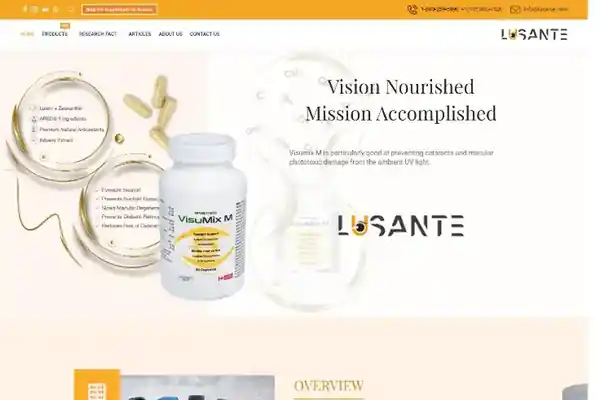
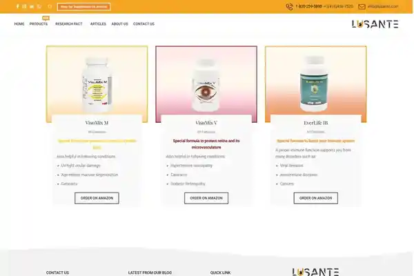

Anteprime locali incluse nel portfolio: home page e pagina prodotto.
Contesto
Il progetto aveva bisogno di presentare prodotti, informazioni aziendali e contenuti di approfondimento in un sito internazionale in lingua inglese.
La sfida
Organizzare informazioni di prodotto e contenuti editoriali in modo coerente, mantenendo una navigazione chiara su desktop e mobile.
Il mio contributo
- Gestione del progetto dal brief iniziale alla configurazione di dominio, hosting e WordPress.
- Progettazione delle pagine e adattamento responsive.
- Configurazione di tema, plugin, slider, moduli e componenti informativi.
- Manutenzione tecnica, aggiornamenti, sicurezza, backup e troubleshooting.
Risultato / consegna
Un sito corporate e di prodotto in lingua inglese, strutturato per presentare linee di prodotto e contenuti informativi.
Il case study descrive esclusivamente il lavoro svolto da me nel periodo indicato. Dove il mio contributo era solo SEO, questo è dichiarato esplicitamente.